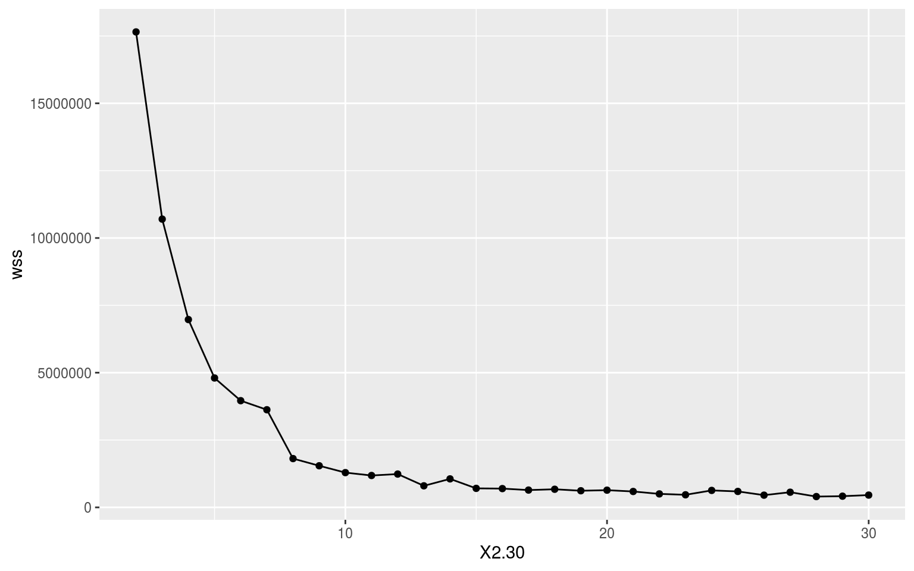
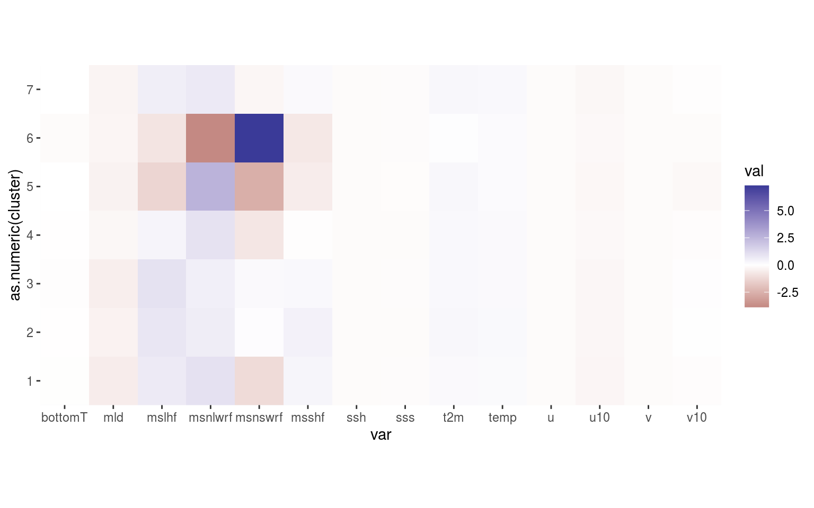
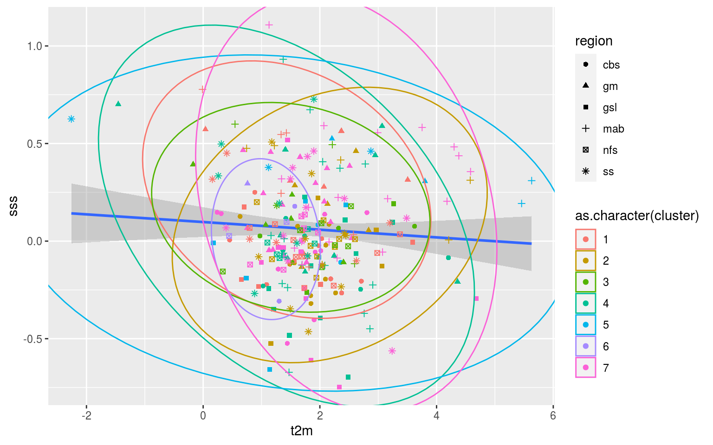
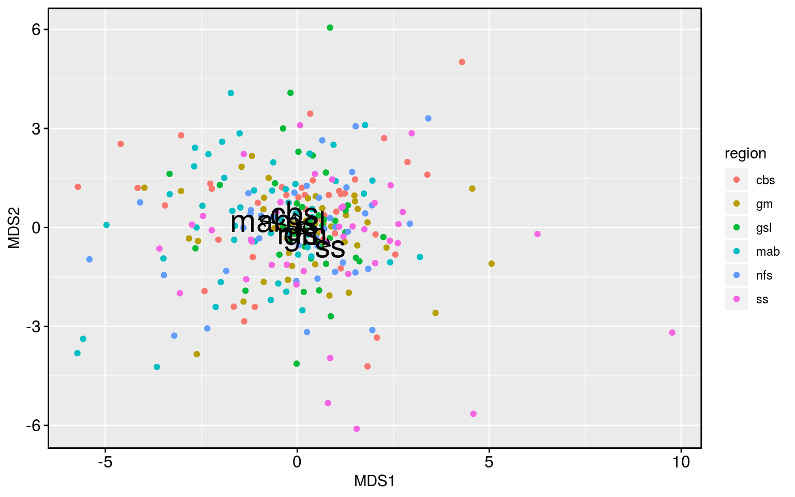

Last updated: 2020-06-02
Checks: 7 0
Knit directory: MHWflux/
This reproducible R Markdown analysis was created with workflowr (version 1.6.2). The Checks tab describes the reproducibility checks that were applied when the results were created. The Past versions tab lists the development history.
Great! Since the R Markdown file has been committed to the Git repository, you know the exact version of the code that produced these results.
Great job! The global environment was empty. Objects defined in the global environment can affect the analysis in your R Markdown file in unknown ways. For reproduciblity it’s best to always run the code in an empty environment.
The command set.seed(20200117) was run prior to running the code in the R Markdown file. Setting a seed ensures that any results that rely on randomness, e.g. subsampling or permutations, are reproducible.
Great job! Recording the operating system, R version, and package versions is critical for reproducibility.
Nice! There were no cached chunks for this analysis, so you can be confident that you successfully produced the results during this run.
Great job! Using relative paths to the files within your workflowr project makes it easier to run your code on other machines.
Great! You are using Git for version control. Tracking code development and connecting the code version to the results is critical for reproducibility.
The results in this page were generated with repository version ae74e76. See the Past versions tab to see a history of the changes made to the R Markdown and HTML files.
Note that you need to be careful to ensure that all relevant files for the analysis have been committed to Git prior to generating the results (you can use wflow_publish or wflow_git_commit). workflowr only checks the R Markdown file, but you know if there are other scripts or data files that it depends on. Below is the status of the Git repository when the results were generated:
Ignored files:
Ignored: .Rhistory
Ignored: .Rproj.user/
Note that any generated files, e.g. HTML, png, CSS, etc., are not included in this status report because it is ok for generated content to have uncommitted changes.
These are the previous versions of the repository in which changes were made to the R Markdown (analysis/k-means-flux.Rmd) and HTML (docs/k-means-flux.html) files. If you’ve configured a remote Git repository (see ?wflow_git_remote), click on the hyperlinks in the table below to view the files as they were in that past version.
| File | Version | Author | Date | Message |
|---|---|---|---|---|
| html | c6087d9 | robwschlegel | 2020-06-02 | Build site. |
| html | 12b4f67 | robwschlegel | 2020-04-29 | Build site. |
| html | 7c04311 | robwschlegel | 2020-04-22 | Build site. |
| html | 99eda29 | robwschlegel | 2020-04-16 | Build site. |
| Rmd | e4b9586 | robwschlegel | 2020-04-16 | Re-built site. |
| Rmd | d22d6a7 | robwschlegel | 2020-04-14 | Text edits |
| Rmd | 3089c7b | robwschlegel | 2020-02-28 | More visuals for the K-means and NMDS results |
| Rmd | 03696de | robwschlegel | 2020-02-27 | Minor tweek |
| Rmd | d97e7bb | robwschlegel | 2020-02-27 | More work on dimension reduction |
| Rmd | c31db05 | robwschlegel | 2020-02-27 | Working on K-means analysis |
| Rmd | 10c69f8 | robwschlegel | 2020-02-26 | A few smol things |
| html | 50eb5a5 | robwschlegel | 2020-02-26 | Build site. |
| Rmd | 891e53a | robwschlegel | 2020-02-26 | Published site for first time. |
| Rmd | 3c72606 | robwschlegel | 2020-02-26 | More writing |
| Rmd | bcd165b | robwschlegel | 2020-02-26 | Writing |
| Rmd | 80324fe | robwschlegel | 2020-02-25 | Adding the foundational content to the site |
The idea laid out in this vignette comes from this publication: https://agupubs.onlinelibrary.wiley.com/doi/full/10.1029/2018EA000519 . The idea basically is that by taking the mean of the environmental variables during the MHW in a region we are able to create something useful for multivariate analysis. And according to the publication above this works well with environmental variables and K-means clustering to determine primary flavours of the same phenomenon. So my thinking here (actually Young-oh Kwon’s thinking) is that we can do this for MHWs. The anticipated outcome is that we will see groups of MHWs that are clearly due to certain drivers over others. The interesting part will come from seeing if these different flavours of MHWs share some other commonality, like region or season of occurrence.
# All of the libraries and objects used in the project
# Note that this also loads the data we will be using in this vignette
source("code/functions.R")
library(vegan) # For multivariate analysesBefore we can run K-means on the mean states during the MHWs, we need to create the mean states themselves. To do this we will take the ALL_anom dataset from the previous vignette and mean those anomaly time series down into single values. We will do this for the full time series’, as well as for the onset and decline portions.
# Create the mean values per event
ALL_mean <- ALL_anom %>%
left_join(GLORYS_MHW_clim[c("region", "doy", "t", "event_no")],
by = c("region", "doy", "t")) %>%
na.omit() %>%
select(-t, -doy) %>%
group_by(region, event_no, var) %>%
summarise_all(mean) %>%
ungroup()
saveRDS(ALL_mean, "data/ALL_mean.Rda")
# Create a wide version for only anomaly values
ALL_mean_wide <- ALL_mean %>%
select(-val, -seas, -thresh) %>%
pivot_wider(names_from = var, values_from = anom)
saveRDS(ALL_mean_wide, "data/ALL_mean_wide.Rda")With a nice wide dataframe of anomalies there is not much more to do than pass ALL_mean_wise to kmeans(). First we need to know what the appropriate number of clusters to use would be. It would be nice if it were six because this matches the number of regions in the study, but let’s let the data take the lead here. Below is the code we use to iterate through the possible results and we end with an elbow plot showing us where the limit of positive returns on model accuracy is. I took this particular code from: https://www.guru99.com/r-k-means-clustering.html.
# Load the wide data
ALL_mean_wide <- readRDS("data/ALL_mean_wide.Rda")
# Then scale the data to a 0 mean 1 SD scale
# NB: It turns out that scaling the data beforehand
# causes the model to perform much more poorly
# I'm not using the dataframe below, but I've left it in for now
ALL_scale <- ALL_mean_wide %>%
mutate_if(.predicate = is.double, .funs = scale)
# Base function
kmean_withinss <- function(k) {
cluster <- kmeans(ALL_mean_wide[,-c(1:2)], k)
return(cluster$tot.withinss)
}
# sapply() it
wss <- sapply(2:30, kmean_withinss)
# Create a dataframe for plotting
elbow <- data.frame(2:30, wss)
# Plot
ggplot(elbow, aes(x = X2.30, y = wss)) +
geom_point() +
geom_line()
| Version | Author | Date |
|---|---|---|
| 99eda29 | robwschlegel | 2020-04-16 |
Where exactly in the above elbow one should focus on is open to some interpretation. Does one take it right at where the curve clearly starts, or one or two steps in? I am going to take it right at the curve as I want to avoid overfitting the model as much as possible. This means we are going with a cluster count of 7. It seems pretty apparent to me that this is a good choice as the gains in model accuracy dramatically slow down after K = 7.
# Performing K-means in R is so easy!
k_res <- kmeans(ALL_mean_wide[,-c(1:2)], 7, iter.max = 10000)
# k_res$betweenss/k_res$totss
k_resK-means clustering with 7 clusters of sizes 45, 45, 22, 55, 14, 5, 72
Cluster means:
bottomT mld msl mslhf msnlwrf msnswrf
1 0.471574741 -2.2443399 -477.68844 4.177967 5.680558 -5.0115799
2 0.516124796 -1.3044380 257.36320 4.808300 3.764252 1.1349830
3 0.386566719 -1.9107403 522.52090 5.550448 3.281895 1.6940040
4 0.543045116 -0.6390683 -161.76380 2.474876 5.470377 -3.3218037
5 0.629883474 -1.4163425 -1036.10471 -6.002791 13.733660 -12.2098929
6 0.005459932 -0.8848696 824.85607 -3.533757 -18.419867 36.6760660
7 0.673140077 -1.0285660 68.56557 3.510061 4.349774 -0.7638414
msshf ssh sss t2m temp u u10
1 2.4087017 0.01405337 0.06571314 1.669855 1.600572 0.005533407 -0.8342249
2 2.9757419 0.02166502 0.01510074 2.013063 1.754287 0.012380538 -0.6569050
3 1.7913637 0.01314387 0.08456167 1.807464 1.602244 0.010869651 -0.6904076
4 0.4154442 0.01917429 0.01413808 1.807151 1.708835 0.009187343 -0.3785695
5 -2.2931055 0.02206284 0.16471180 2.100224 1.472360 -0.002747002 -0.5593309
6 -3.0066297 0.00430838 0.05820023 1.101243 1.472727 -0.004518998 -0.3504811
7 1.7170301 0.01789951 0.09585039 1.957934 1.769406 0.007803413 -0.6152098
v v10
1 0.016251349 0.29116593
2 0.017520679 0.88400732
3 0.016634591 0.94010401
4 0.010857590 0.28184880
5 0.002993552 -0.46579516
6 0.005990604 0.02350157
7 0.016718279 0.33955102
Clustering vector:
[1] 7 1 7 6 4 1 2 2 1 7 6 5 7 3 2 7 4 2 1 4 1 1 5 3 2 7 2 7 4 7 2 2 2 1 4 1 3
[38] 2 1 4 3 1 7 2 7 3 2 7 2 6 1 4 1 4 3 5 4 4 7 7 4 4 1 7 7 4 7 7 2 3 3 1 2 4
[75] 7 7 3 7 7 1 1 5 7 7 4 2 7 5 4 1 7 2 7 4 7 7 4 2 4 4 7 4 1 4 4 7 4 1 7 1 7
[112] 1 5 5 2 1 3 5 7 7 7 5 3 4 4 2 4 4 7 5 7 2 7 7 2 2 7 4 4 2 4 1 4 4 4 7 1 1
[149] 7 7 4 4 7 1 2 1 1 4 3 3 7 1 4 7 7 4 4 7 4 7 7 5 7 4 7 3 4 2 7 6 1 7 2 2 1
[186] 4 4 2 1 1 3 2 3 4 7 7 7 2 4 2 7 1 3 4 1 3 1 6 2 3 3 2 1 2 1 7 3 1 2 2 2 1
[223] 7 2 7 7 1 1 5 7 2 4 7 7 2 5 2 2 4 4 1 4 7 1 5 7 3 7 7 4 7 7 1 7 4 4 2 2
Within cluster sum of squares by cluster:
[1] 636108.7 181580.3 158182.9 291988.0 2029562.8 51376.7 273470.3
(between_SS / total_SS = 91.5 %)
Available components:
[1] "cluster" "centers" "totss" "withinss" "tot.withinss"
[6] "betweenss" "size" "iter" "ifault" As we may see from the print-out above, the 7 cluster approach explains ~91% of the variance within the dataset. That’s pretty good! So let’s see what these clusters actually look like in relation to one another.
# Cast the K-means results long
k_res_long <- k_res$centers %>%
data.frame() %>%
mutate(cluster = row.names(.)) %>%
pivot_longer(cols = bottomT:v10, names_to = "var", values_to = "val") %>%
filter(var != "msl") %>% # These values are so large they make it impossible to see anything else
mutate(val = scale(val))
# Create a heatmap of the values per cluster
ggplot(data = k_res_long, aes(x = var, y = as.numeric(cluster), fill = val)) +
geom_tile() +
scale_y_continuous(breaks = seq(1, 7, by = 1)) +
scale_fill_gradient2() +
coord_equal(expand = F)
So that’s not very useful. The scale of the variables are rather different so I think we are going to need to go for scatterplots with ellipses showing the clustering. This may also be a useful application of a shiny app so that one may quickly go through all of the different combinations of Y vs X axes.
# Extract cluster info
ALL_mean_wide <- ALL_mean_wide %>%
mutate(cluster = k_res$cluster)
# A scatterplot showing the assigned clusters
ggplot(data = ALL_mean_wide, aes(x = t2m, y = sss)) +
geom_smooth(method = "lm") +
geom_point(aes(colour = as.character(cluster), shape = region)) +
ggforce::geom_mark_ellipse(aes(group = cluster, colour = as.character(cluster)))
In order to efficiently investigate all of these relationships these data should be fed into the shiny app. Regardless, after looking at this for a little bit it appears that there is no clear relationship between the clusters and the regions of occurrence of the MHWs. In fact, there appears to be very little clustering happening at all. I’m not sure how it is that the K-means results claim to explain 90% of the variance between groups when there appears to be no real difference between clusters. I think I need to have more of a think about how to reduce the dimensionality of these data and what exactly this k-means clustering method is doing/saying.
Another option open to us is the use of non-metric multidimensional scaling (NMDS) to reduce the dimensionality in the data before performing a clustering. Thinking out loud now though I don’t think this is really necessary as the K-means algorithm above isn’t being pushed too much. But I’ve got the code just lying around so why not just pop it in there and see how it looks.
# The code for an NMDS analysis
ALL_mean_MDS <- metaMDS(vegdist(decostand(ALL_mean_wide[,-c(1:2)], method = "standardize"),
method = "euclidean"), try = 100)Run 0 stress 0.2132493
Run 1 stress 0.4176571
Run 2 stress 0.2132428
... New best solution
... Procrustes: rmse 0.001859736 max resid 0.01875967
Run 3 stress 0.2132517
... Procrustes: rmse 0.0006015007 max resid 0.007648459
... Similar to previous best
Run 4 stress 0.2132583
... Procrustes: rmse 0.001349996 max resid 0.01505539
Run 5 stress 0.2138856
Run 6 stress 0.2157486
Run 7 stress 0.2151014
Run 8 stress 0.2132509
... Procrustes: rmse 0.0005757542 max resid 0.007202895
... Similar to previous best
Run 9 stress 0.2138627
Run 10 stress 0.213873
Run 11 stress 0.2194757
Run 12 stress 0.2132368
... New best solution
... Procrustes: rmse 0.001376315 max resid 0.02063375
Run 13 stress 0.2132458
... Procrustes: rmse 0.001545518 max resid 0.02350355
Run 14 stress 0.2151054
Run 15 stress 0.2394474
Run 16 stress 0.2196631
Run 17 stress 0.2138745
Run 18 stress 0.2156997
Run 19 stress 0.2491919
Run 20 stress 0.215084
Run 21 stress 0.2214643
Run 22 stress 0.2157033
Run 23 stress 0.2213485
Run 24 stress 0.2150825
Run 25 stress 0.2138667
Run 26 stress 0.2138929
Run 27 stress 0.2132434
... Procrustes: rmse 0.002582142 max resid 0.03487173
Run 28 stress 0.21571
Run 29 stress 0.2138832
Run 30 stress 0.2157632
Run 31 stress 0.2213175
Run 32 stress 0.2138726
Run 33 stress 0.2151527
Run 34 stress 0.2150993
Run 35 stress 0.2150867
Run 36 stress 0.2132491
... Procrustes: rmse 0.001487244 max resid 0.02099956
Run 37 stress 0.21325
... Procrustes: rmse 0.002077323 max resid 0.02583564
Run 38 stress 0.2132406
... Procrustes: rmse 0.002489677 max resid 0.03432218
Run 39 stress 0.2151057
Run 40 stress 0.2132381
... Procrustes: rmse 0.0002400459 max resid 0.003355589
... Similar to previous best
Run 41 stress 0.2369653
Run 42 stress 0.2209695
Run 43 stress 0.2202639
Run 44 stress 0.2157601
Run 45 stress 0.2132355
... New best solution
... Procrustes: rmse 0.0004714176 max resid 0.005284649
... Similar to previous best
Run 46 stress 0.221348
Run 47 stress 0.2376108
Run 48 stress 0.2215817
Run 49 stress 0.2132456
... Procrustes: rmse 0.001518405 max resid 0.02246817
Run 50 stress 0.2132405
... Procrustes: rmse 0.002363793 max resid 0.03269779
Run 51 stress 0.2132607
... Procrustes: rmse 0.0007328484 max resid 0.007237298
... Similar to previous best
Run 52 stress 0.2132589
... Procrustes: rmse 0.00181695 max resid 0.01810557
Run 53 stress 0.2213675
Run 54 stress 0.2157101
Run 55 stress 0.2138703
Run 56 stress 0.2146074
Run 57 stress 0.2214572
Run 58 stress 0.2151144
Run 59 stress 0.2132473
... Procrustes: rmse 0.0015219 max resid 0.02207271
Run 60 stress 0.2342896
Run 61 stress 0.2132415
... Procrustes: rmse 0.002383193 max resid 0.03266069
Run 62 stress 0.2151081
Run 63 stress 0.2290111
Run 64 stress 0.2132373
... Procrustes: rmse 0.0004750876 max resid 0.004411598
... Similar to previous best
Run 65 stress 0.2132636
... Procrustes: rmse 0.002381171 max resid 0.02370774
Run 66 stress 0.4176901
Run 67 stress 0.2157103
Run 68 stress 0.2409388
Run 69 stress 0.2132449
... Procrustes: rmse 0.001433844 max resid 0.01989819
Run 70 stress 0.2138676
Run 71 stress 0.2157298
Run 72 stress 0.2150971
Run 73 stress 0.2151096
Run 74 stress 0.2213797
Run 75 stress 0.2353764
Run 76 stress 0.2198894
Run 77 stress 0.2194868
Run 78 stress 0.2138875
Run 79 stress 0.2138892
Run 80 stress 0.2221134
Run 81 stress 0.2156991
Run 82 stress 0.221347
Run 83 stress 0.2437205
Run 84 stress 0.2139238
Run 85 stress 0.2150864
Run 86 stress 0.2132433
... Procrustes: rmse 0.001403583 max resid 0.02017026
Run 87 stress 0.2157055
Run 88 stress 0.2132415
... Procrustes: rmse 0.002378864 max resid 0.03279467
Run 89 stress 0.2140778
Run 90 stress 0.2138856
Run 91 stress 0.213889
Run 92 stress 0.2394837
Run 93 stress 0.2157035
Run 94 stress 0.2150795
Run 95 stress 0.2150863
Run 96 stress 0.2322319
Run 97 stress 0.2413702
Run 98 stress 0.2191436
Run 99 stress 0.2213802
Run 100 stress 0.2417051
*** Solution reached# Fit environmental variables
ord_fit <- envfit(ALL_mean_MDS ~ region, data = ALL_mean_wide[,1:2])
ord_fit_df <- as.data.frame(ord_fit$factors$centroids) %>%
mutate(region = str_remove(row.names(.), "region"))
# Prep for plotting
mds_df <- data.frame(ALL_mean_MDS$points, ALL_mean_wide)
# The visual
ggplot(data = mds_df, aes(x = MDS1, y = MDS2)) +
geom_point(aes(colour = region)) +
geom_segment(data = ord_fit_df, aes(x = 0, y = 0, xend = NMDS1, yend = NMDS2),
arrow = arrow(angle = 40, length = unit(0.2, "cm"), type = "open"),
alpha = 1, colour = "black", size = 0.5) +
geom_text(data = ord_fit_df, aes(label = region, x = NMDS1, y = NMDS2), size = 8) +
theme_grey() +
theme(strip.background = element_rect(fill = NA),
panel.border = element_rect(fill = NA, colour = "black", size = 1),
axis.text = element_text(size = 12, colour = "black"),
axis.ticks = element_line(colour = "black"))
Meh. The analysis works but it shows that there is little difference between the regions. With the exception of the Scotian Shelf being a bit different than the Mid-Atlantic Bight. We could already see in the correlation results that the Scotian Shelf was a bit different, so these underwhelming results are at least consistent with the story thus far.
sessionInfo()R version 4.0.0 (2020-04-24)
Platform: x86_64-pc-linux-gnu (64-bit)
Running under: Ubuntu 16.04.6 LTS
Matrix products: default
BLAS: /usr/lib/openblas-base/libblas.so.3
LAPACK: /usr/lib/libopenblasp-r0.2.18.so
locale:
[1] LC_CTYPE=en_CA.UTF-8 LC_NUMERIC=C
[3] LC_TIME=en_CA.UTF-8 LC_COLLATE=en_CA.UTF-8
[5] LC_MONETARY=en_CA.UTF-8 LC_MESSAGES=en_CA.UTF-8
[7] LC_PAPER=en_CA.UTF-8 LC_NAME=C
[9] LC_ADDRESS=C LC_TELEPHONE=C
[11] LC_MEASUREMENT=en_CA.UTF-8 LC_IDENTIFICATION=C
attached base packages:
[1] stats graphics grDevices utils datasets methods base
other attached packages:
[1] vegan_2.5-6 lattice_0.20-41 permute_0.9-5
[4] ggraph_2.0.2 correlation_0.2.1 tidync_0.2.3
[7] heatwaveR_0.4.2.9004 lubridate_1.7.8 forcats_0.5.0
[10] stringr_1.4.0 dplyr_0.8.5 purrr_0.3.4
[13] readr_1.3.1 tidyr_1.0.3 tibble_3.0.1
[16] ggplot2_3.3.0 tidyverse_1.3.0
loaded via a namespace (and not attached):
[1] nlme_3.1-147 fs_1.4.1 doParallel_1.0.15 insight_0.8.3
[5] httr_1.4.1 rprojroot_1.3-2 tools_4.0.0 backports_1.1.7
[9] R6_2.4.1 mgcv_1.8-31 DBI_1.1.0 lazyeval_0.2.2
[13] colorspace_1.4-1 withr_2.2.0 gridExtra_2.3 tidyselect_1.1.0
[17] compiler_4.0.0 git2r_0.27.1 cli_2.0.2 rvest_0.3.5
[21] RNetCDF_2.3-1 xml2_1.3.2 plotly_4.9.2.1 labeling_0.3
[25] bayestestR_0.6.0 scales_1.1.1 digest_0.6.25 rmarkdown_2.1
[29] pkgconfig_2.0.3 htmltools_0.4.0 dbplyr_1.4.3 htmlwidgets_1.5.1
[33] rlang_0.4.6 readxl_1.3.1 rstudioapi_0.11 generics_0.0.2
[37] farver_2.0.3 jsonlite_1.6.1 magrittr_1.5 ncmeta_0.2.0
[41] Matrix_1.2-18 parameters_0.6.1 Rcpp_1.0.4.6 munsell_0.5.0
[45] fansi_0.4.1 viridis_0.5.1 lifecycle_0.2.0 stringi_1.4.6
[49] whisker_0.4 yaml_2.2.1 MASS_7.3-51.6 grid_4.0.0
[53] parallel_4.0.0 promises_1.1.0 ggrepel_0.8.2 crayon_1.3.4
[57] splines_4.0.0 graphlayouts_0.7.0 haven_2.2.0 hms_0.5.3
[61] knitr_1.28 pillar_1.4.4 igraph_1.2.5 effectsize_0.3.0
[65] codetools_0.2-16 reprex_0.3.0 glue_1.4.1 evaluate_0.14
[69] data.table_1.12.8 modelr_0.1.7 foreach_1.5.0 vctrs_0.3.0
[73] tweenr_1.0.1 httpuv_1.5.2 cellranger_1.1.0 gtable_0.3.0
[77] polyclip_1.10-0 assertthat_0.2.1 xfun_0.13 ggforce_0.3.1
[81] broom_0.5.6 tidygraph_1.1.2 later_1.0.0 ncdf4_1.17
[85] viridisLite_0.3.0 iterators_1.0.12 cluster_2.1.0 workflowr_1.6.2
[89] ellipsis_0.3.0